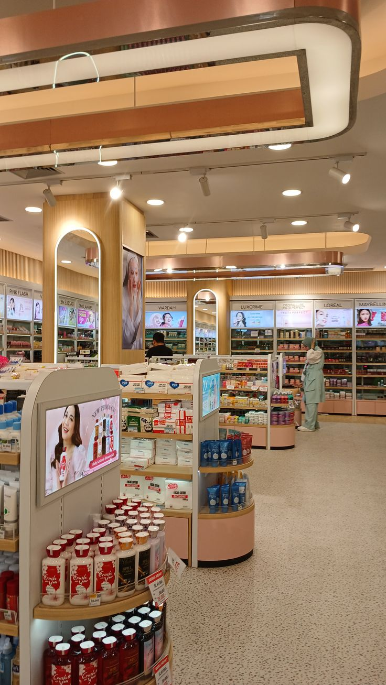
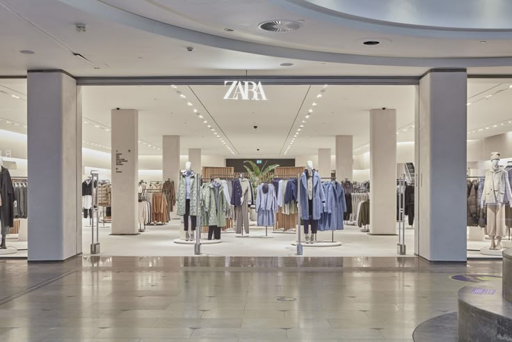

Tech Stack


Consumer Brands | Brand Experience | Business Analytics
Turning insights into actions that drive growth.
Retail Operations and Trade Marketing leader with 13 years of experience driving execution, brand presence and customer experience across Mexico's leading department store chains, including Liverpool, El Palacio de Hierro and Sears. Complemented by a Data Analytics certification (TripleTen), I combine business expertise with analytical skills in SQL, Python, Power BI and Tableau to transform data into actionable insights and support smarter commercial decisions.
Download Resume
Interactive sales dashboard focused on store-level KPIs, visual hierarchy, and performance insights to support commercial optimization.
View Analysis PDFPower BI dashboard integrating Sell-Out, Fill Rate, Planogram Compliance and field execution KPIs for retail leadership.

End-to-end analytics project combining Python ETL, inventory optimization and Power BI insights for retail decision-making.

Retail and fashion elasticity analysis exploring how price, promotion and layout influence product performance.

PostgreSQL analysis focused on inventory turnover, stock-out prevention and department-level retail performance.

Customer acquisition analysis using LTV, CAC, ROMI and cohort behavior to recommend marketing budget allocation.

Predictive model and customer segmentation analysis to identify churn risk and recommend retention actions.